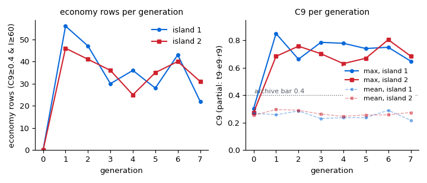
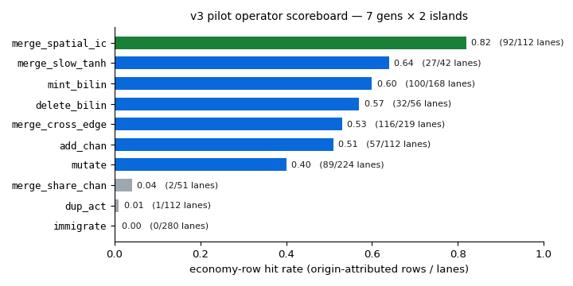
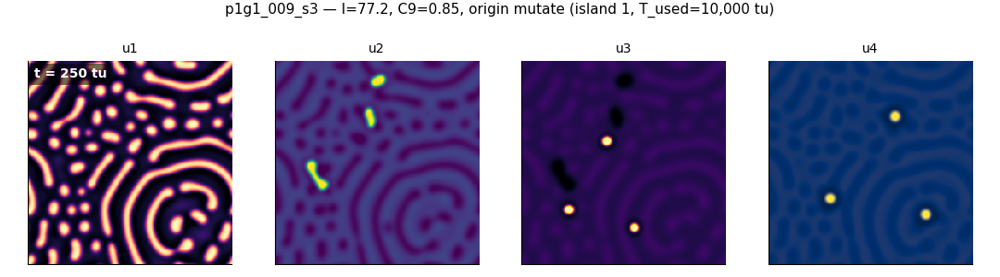
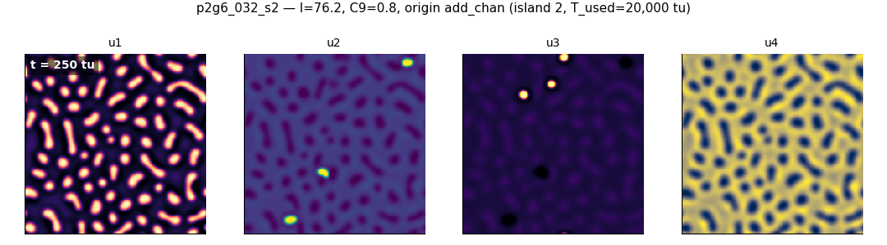
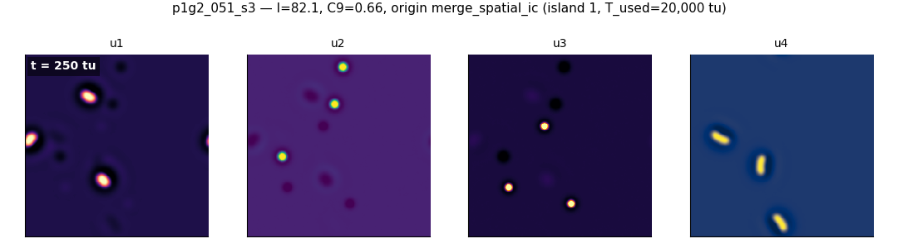

merge_spatial_ic is the top operator at a 0.82 hit rate. And
one finding is stated plainly below because it shapes what happens next: the C9
ceiling is flat across generations — economy niches are found early and
held, not compounded.The v2 interest currency (C1–C8) pays for density — organisms, motion machinery, internal dynamics, memory — and evolution obliged: the best v2 worlds tile the whole box. The v3 design rule targets the other side of that tension, and it prices realized consequences, not appearance. There is no reward for looking sparse; the score pays for what sparsity buys. C9 is the geometric mean of four [0,1] factors — any zero kills it:
Selection sees interest_v3 = interest_v2 + W9·C9 with
W9 = 0.25 of total weight (v2 components keep their relative
proportions), and the archive's descriptor key gains one axis — a spatial class
in {mixed | structured | economy} — so
MAP-Elites protects sparse-structured lineages from being outcompeted by
dense high-C1–C8 worlds instead of asking them to win a fight they lose (the
campaign lesson: protect the niche, don't fight the gradient). An economy
cell, for the pilot bar, is an archive cell holding C9 ≥ 0.4 at
interest ≥ 60.
The metric was gated before any evolution ran
(VALIDATION_V3.md): three banks — ground-truth worlds + v2
champions, hand-built positives (the cargo-in-cell membrane world, M5 trains,
the M2 dimer gas), and anti-gaming probes (dead world, frozen lattice, noise
soup — all forced to C9 = 0 by a named factor) — landed in the expected order
after five documented threshold tunes. One prior was revised by the metric
rather than the reverse: p4g2_044, long read as a "sparse rotor,"
is actually a rotor on a box-covering excited carpet; C9 = 0 is the correct
verdict.
assay_v3
battery provides but the pilot pods' v2-format records do not. Pilot C9 is
therefore the geometric mean of t9·e9·r9 only — every C9 number below is
partial-mode. Two consequences: the surface-locality factor the spec cares
about is unmeasured in these rows, and the spatial-class gate is
conservative — only 6 rows earn the strict economy class label;
most bar-passing rows classify structured. Full-C9 (s9) confirms
for economy elites are part of the continuation plan.Two islands, one A100 pod each, population 96 per generation, spec'd for up to 12 generations with the bar at ≥5 economy cells; both ran generations 1–7, which sufficed for the pilot question (section 4). Seeds are the v2 union archive's top rows, plus the atlas as seed stock: hand-built positives — membrane and channel worlds from the bounded-structures program (post 8) — enter as immigrants. The grammar is unchanged from v2: the planned wall-channel template was demoted to a contingency (one change at a time), so v3-core is exactly C9 + phenotype clustering (d7b) + the spatial-class archive axis + one new operator.
True spatial gluing of two chemistries — per-region coefficients with
partition-of-unity seams — is a v4 engine project; today's certified steppers
assume uniform coefficients. The v3 bridge costs no numerics at all: the child
inherits one parent's chemistry verbatim, and its initial condition
is composed from both parents' developed states — each parent's fields
after 300 tu of development, stamped into disjoint soft-masked regions with
periodic-safe seams (4 px). Two evolved populations meet in space; the
chemistry stays uniform; the hook is data-level (it replaces the state after
init_soup; no locked file was edited). It got 8 lanes per
generation, and its pilot performance is the decision data for whether the v4
patch-stepper port gets funded.
| island 1 | island 2 | union | |
|---|---|---|---|
| distinct economy cells (C9 ≥ 0.4 & I ≥ 60) | 60 | 50 | 76 |
| economy rows (scored candidate × seed results) | 516 | ||
| archive cells seed-3-confirmed through gen 7 | 74 | 73 | |
| success bar | ≥5 → PASS, 15× | ||

| gen | island 1 | island 2 | ||||||||
|---|---|---|---|---|---|---|---|---|---|---|
| rows | max C9 | mean C9 | econ rows | max I | rows | max C9 | mean C9 | econ rows | max I | |
| 0 | 3 | 0.30 | 0.27 | 0 | 0 | 3 | 0.27 | 0.25 | 0 | 0 |
| 1 | 199 | 0.85 | 0.26 | 56 | 80.5 | 191 | 0.68 | 0.30 | 46 | 79.3 |
| 2 | 174 | 0.66 | 0.29 | 47 | 82.3 | 160 | 0.76 | 0.29 | 41 | 76.3 |
| 3 | 158 | 0.79 | 0.23 | 30 | 79.3 | 158 | 0.70 | 0.26 | 36 | 73.3 |
| 4 | 151 | 0.78 | 0.24 | 36 | 81.8 | 129 | 0.63 | 0.25 | 25 | 74.3 |
| 5 | 126 | 0.74 | 0.24 | 28 | 78.5 | 130 | 0.67 | 0.26 | 35 | 77.4 |
| 6 | 137 | 0.75 | 0.29 | 43 | 78.6 | 130 | 0.81 | 0.26 | 40 | 76.9 |
| 7 | 106 | 0.65 | 0.22 | 22 | 82.3 | 119 | 0.69 | 0.28 | 31 | 79.5 |
Hit rate is origin-attributed: every economy row is credited to the operator that created its base candidate (confirm reruns map back to the original lane).

| operator | lanes | econ rows | hit rate | note |
|---|---|---|---|---|
merge_spatial_ic | 112 | 92 | 0.82 | the v3 flagship — 8 lanes/gen only |
merge_slow_tanh | 42 | 27 | 0.64 | |
mint_bilin | 168 | 100 | 0.60 | |
delete_bilin | 56 | 32 | 0.57 | |
merge_cross_edge | 219 | 116 | 0.53 | |
add_chan | 112 | 57 | 0.51 | |
mutate | 224 | 89 | 0.40 | |
merge_share_chan | 51 | 2 | 0.04 | dead lane |
dup_act | 112 | 1 | 0.01 | dead lane |
immigrate | 280 | 0 | 0.00 | zero direct rows; supplies parent stock |
merge_spatial_ic is the validation the spec asked for: on only
8 lanes per generation it converts 82% of its lanes into economy rows —
18 points clear of the next operator and double mutate. Composing
two elites' developed populations in space is, in this search, the most
reliable known way to make a world that scores as an economy. The two structural
duplicators (dup_act, merge_share_chan) are dead
lanes for this objective, and immigrate scored zero economy rows
directly — but it supplies the parent stock the merges draw from, the same
dynasty-timescale role it played in v2. All three lose lanes in the
continuation respec.
Stated plainly: C9 does not escalate across generations. The pilot's best C9, 0.85, appears at generation 1 on island 1; island 2's best, 0.80, arrives at generation 6 — but the union ceiling was set in generation 1 and never beaten. Mean C9 is flat at ~0.25–0.29, and per-generation economy-row counts oscillate in a stable 22–56 band with no trend. Economy niches are found early — by v2-seeded elites under strong operators — and held, not compounded. Selection at W9 = 0.25 maintained the niches it was asked to protect; it did not climb the axis. Seven generations were enough to see that, which is why the pilot stopped there.
| candidate | isl | origin op | I | C9 | archive cell (v3 key: …|spatial class) |
|---|---|---|---|---|---|
p1g1_009_s3 | 1 | mutate | 77.2 | 0.85 | 4|grow|rotor|liquid|s1|g2|structured |
p2g6_032_s2 | 2 | add_chan | 76.2 | 0.80 | 3|switch|rotor|liquid|s1|g1|structured |
p1g3_005_s3 | 1 | mutate | 73.5 | 0.79 | 3|switch|rotor|flicker|s1|g1|structured |
p1g2_051_s3 | 1 | merge_spatial_ic | 82.1 | 0.66 | 4|grow|mobile|liquid|s3|g2|structured |
p1g4_050_s3 | 1 | merge_spatial_ic | 81.8 | 0.65 | 4|grow|mobile|liquid|s3|g2|structured |
p2g7_049_s3 | 2 | merge_spatial_ic | 79.5 | 0.66 | 4|grow|mobile|liquid|s2|g2|structured |



The pilot validates the pressure and the operator, not yet an open-ended climb. C9 plus the spatial-class niche surfaced 76 protected economy cells from material the v2 archive already contained, in one generation, and kept them alive for six more — exactly what archive protection is for. What the pilot did not show is compounding: under W9 = 0.25 the selection gradient toward higher C9 was evidently too weak to matter once the bar was cleared. The harvest's own verdict was no to a same-config continuation — breadth would grow, the C9 ceiling would not.
So the continuation now running (generations 8–12, from the gen-7 snapshots) is a respec, not a rerun:
| change | from → to | why |
|---|---|---|
merge_spatial_ic lanes | 8 → 24 per gen | 3× the top operator (0.82) |
mint_bilin lanes | → 16 | second-tier workhorse (0.60 on 168 lanes) |
immigrate lanes | 20 → 5 | zero direct economy rows; keeps a trickle of parent stock |
dup_act, merge_share_chan | → 0 | dead lanes (0.01 / 0.04) |
| W9 | 0.25 → 0.40 | press C9 directly in selection, not only via niche protection |
| archive currency | C9-backfill of the 88 v2-seeded elites | every archive row on the same interest_v3 currency (ingest rows lacked C9) |
That is the direct test of the flat-ceiling reading: if C9 still refuses to
climb with triple the spatial-merge bandwidth and a 0.40 selection weight, the
ceiling is real under this grammar — and the contingent wall template (and
eventually the v4 patch-glued stepper, for which merge_spatial_ic's
0.82 is the funding evidence) is the next move. Films of the best economy
worlds and the full 12-generation picture follow in an update when the
continuation harvest lands.
merge_spatial_ic lanes were composing initial conditions
off the batched tensor path, and C9 rescoring was blocking the driver —
a 9.5 h first window triggered the RED protocol (stop the line, fix the engine,
re-gate; post 9's discipline). The fix shipped as blobkit 0.3.5: IC lanes moved
onto the GPU batch tensor and the C9 rescore into a spawn pool — a 10–20×
lane speedup — after which generations settled at ~3.5–4.5 h with zero worker
crashes over 7 generations × 2 islands. The engine story stays in
post 9; this post only uses it.